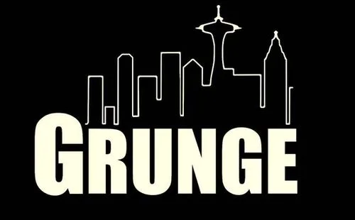
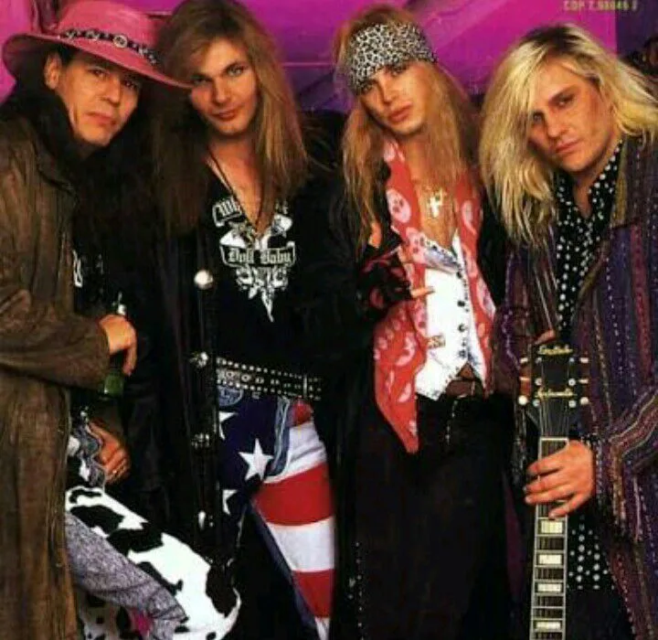
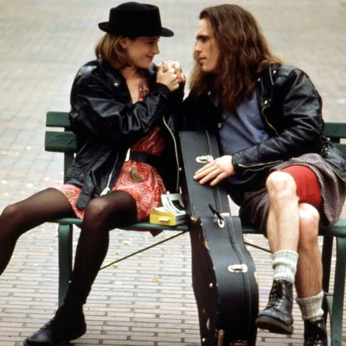
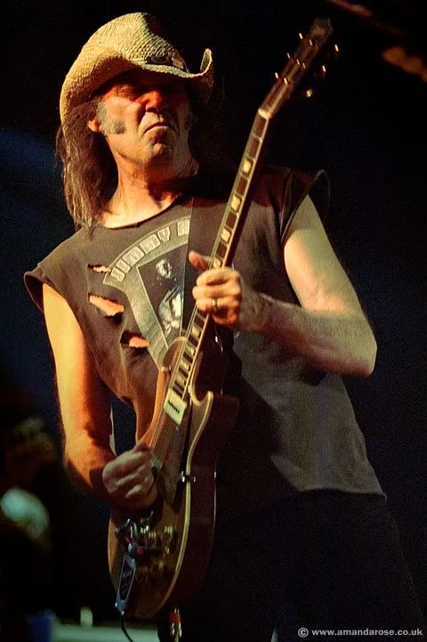
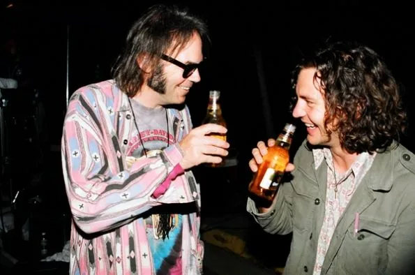
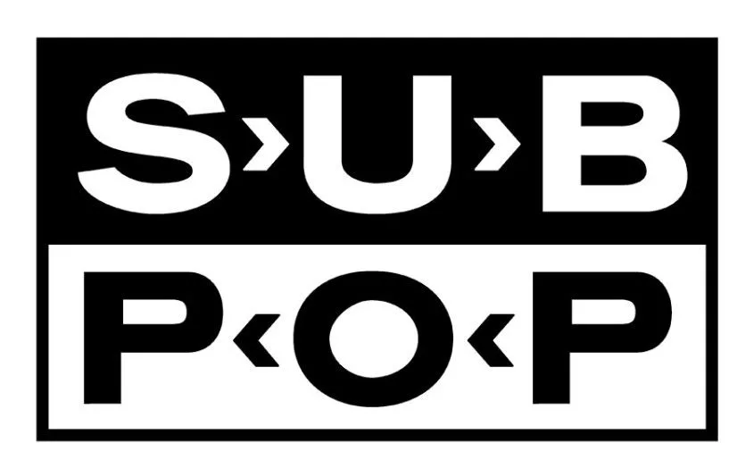
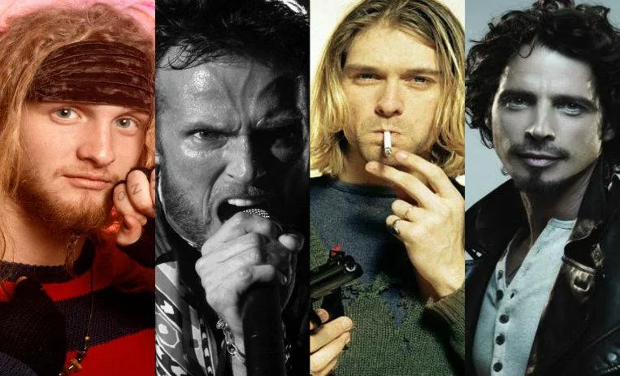

El Sonido de Seattle

Este genero siendo contemporáneo de lo que se llamó La Generación X, nace de una mezcla musical de guitarras distorsionadas, con la batería predominando en los temas y sus letras llenas de apatía y desencanto. Después de la década de los 80 marcada por el exceso y lo ostentoso, el grunge rompía con todo eso con una estética mucho más descuidada, jeans rotos, ropa más usada y largas melenas. Los líderes de las principales bandas huían de la fama, no era lo que ellos iban buscando, pero se terminaron convirtiendo en verdaderos iconos de masas.
Nace del Rock Alternativo, con influencias del Noise Rock, el Hardcore Punk y Hard Rock, también es conocido como el “Sonido de Seattle”, nace a finales de los años 80’s, en Washington especialmente en la zona de Seattle. Representaba la contraparte del Glam Metal, muchos dicen que nació como reacción contra la popularidad que ellos estaban teniendo, ya que estaban dominando los primeros lugares de popularidad en las listas más importantes de la época. Esto debido a que el Glam se había convertido en un género demasiado comercial y sus atuendos llegaban al punto de ser considerados como ridículos, por lo que las bandas de Grunge buscaban mostrarse tal como eran con vestimentas casuales y buscando que las personas se enfocarán realmente en su música y sus letras. Así mismo, los temas que tocaban en sus letras eran todo lo contrario a las letras que usaban en el Glam. El nombre en apariencia viene del término Grungy, término popular en inglés que significa sucio se origina como jerga de las palabras dirty y filth.


Se dice que la primera persona en utilizar el vocablo fue Mark Arm, vocalista de Green River y Mudhoney, fue el culpable de la denominación de este género musical al llamarlo «sucio» en un estilo despectivo, y ya la marca discográfica Sub Pop, lo popularizó al referirse así a este estilo musical. Los músicos de esta época gritaban contra la sociedad en la que les había tocado vivir, buscaban libertad de expresión y luchaban contra una marginación social existente en el panorama americano.
Para hablar de Grunge no podemos dejar de mencionar y remontarnos unos años atrás con Neil Young, ya que su trabajo de guitarra, especialmente con Crazy Horse, le valió el apodo de «El Padrino del Grunge» ha influido en artistas como Kurt Cobain, Eddie Vedder, Chris Cornell, Thom Yorke de Radiohead, Kim Gordon de Sonic Youth y Stephen de Pavement, entre otros. Como dato curioso Pearl Jam y Neil Young grabaron en conjunto el álbum “Mirrorball”, aunque es una álbum creado mano a mano por ambas partes, oficialmente es un álbum de Young, pasando a Pearl Jam a un segundo plano, ejerciendo por así decirlo de una banda de acompañamiento que dice algunas cosas en el álbum, pero insistimos siempre bajo la batuta del maestro. Las sesiones de grabación fueron realizadas entre enero y febrero de 1995 en los Bad Animals Studio de Seattle, bajo las órdenes de Brendan O’Brien. Productor que ya había comandado la nave de Pearl Jam, en los álbumes “Vs.” y “Vitalogy”.


Aunque se atribuye a Seattle el nacimiento de este género musical, sería más conveniente decir que se creó en la parte del noroeste del Pacífico, tanto Seattle como Aberdeen, Olympia y Portland fueron las ciudades natales de muchas de las estrellas de este género. Sub Pop se encargó de anclar el grunge a la ciudad de Seattle, ya que es donde esta compañía discográfica lanzó a la fama a bandas como Soundgarden, Mudhoney o Nirvana. Sub Pop es un sello discográfico independiente de Seattle, ha sido considerado como uno de los que dio los primeros pasos para la popularización del grunge. Tres décadas suma ya de historia esa pequeña discográfica que desde Seattle, con mucho esfuerzo, contactos y el don de la oportunidad, cambió por completo la concepción de la música de masas y la música underground reventando las listas de todo el mundo y acaparando el foco de atención en un momento en el que la sociedad parecía necesitar.

La música grunge, la estética y actitud de sus representantes, caracterizó lo que después se llegó a denominar el “Movimiento Grunge” o la “Cultura Grunge”. En general, reflejaban el desencanto y desengaño de los jóvenes con el consumismo y la competitividad que les rodeaban. Todo ello les hundió en un pesimismo existencial, frustración y apatía. A pesar de considerarse un movimiento antisistema, a diferencia de la rebeldía del Punk y la energía del Rock, los fans del grunge buscaban un refugio para olvidarse de la realidad, por lo que drogas como la heroína tuvieron un papel importante.
En general se habla de dos olas del grunge: en la primera, más parecida al metal, se incluyen grupos como Green River, Mudhoney, Melvins y Soundgarden. La segunda comenzó con Nirvana y un sonido más melódico, por lo que se suele considerar que, a partir de ahí, el grunge dejó atrás sus raíces punk y se volvió más mainstream.
Con la muerte de Kurt Cobain en 1994 ‘’muere’’ el género grunge con el suicidio de uno de sus iconos más importantes y da la pauta a su propio subgénero denominado como Post-grunge el cual se aleja de sus orígenes de Seattle y se vuelve más comercial. Lo curioso es que poca gente sabría definir el post-grunge, ya que no es un estilo musical. En 1995 una nueva oleada de bandas como Collective Soul, Foo Fighters (capitaneada por Dave Grohl, baterista de Nirvana), Silverchair, Creed e incluso el primer disco de Alanis Morrisette, se lanzaron a emular estéticas, estilos y sonidos de los grupos de grunge clásicos, en algo que ya no era exactamente grunge. Pero poco a poco el sonido post-grunge se fue enlatando, las guitarras, ya no tan distorsionadas como estridentes no transmitían ya rabia y pesimismo, sino un enfado más que cortés y enlatado, incluso se impusieron baladas y canciones de amor en los temas de las canciones, con riffs facilones para hacer las canciones más pegadizas, poco a poco bandas de prestigio que alguna vez habían coqueteado o participado en el Grunge se separaban más y más del nuevo sonido, que ahora pertenecía a grupos como Nickleback, Creed, Staind, Puddle of Mudd, etc… a los que se irían sumando después religiosamente año tras año nuevas propuestas a cada cual más prefabricada y enlatada que la anterior.
El movimiento Grunge tuvo un retrato cinematógrafo con la película Singles (1992) de Cameron Crowe, una historia de un grupo de seis amigos veinteañeros, que reside en el mismo bloque de apartamentos, y cuya vida gira en torno al ambiente musical de Seattle en ese tiempo como Pearl Jam, Alice in Chains, Soundgarden, y el cantante Tad Doyle de las bandas Tad y Hog Molly. La situación laboral de estos jóvenes, que buscan una pareja estable, es más bien precaria. Cuenta con cameos de Eddie Vedder, Stone Gossard, Jeff Ament, Chris Cornell y Alice in Chains, entre otros, que también participaron en la impresionante banda sonora.
Si mis líneas no te bastan y quieres saber más de este género, te recomiendo el documental llamado Hype! del año 1996, que muestra la escena musical de la ciudad Seattle. Está dirigido por el documentalista y editor Doug Pray, de hecho, este documental fue su debut profesional en el mundo del arte cinematográfico y obtuvo varios premios, entre ellos el premio a mejor documental en el Seattle International Film Festival.
Otra opción es 1991: The Year Punk Broke, Rockumental donde acompañan la gira de Sonic Youth por Europa y experiencias que tuvo la banda del otro lado del mundo. Además, a lo largo de esta gira nos encontramos con las contribuciones de Nirvana (quienes los acompañaron por Inglaterra, Irlanda y Alemania), Babes In Toyland, Dinosaur Jr, Mudhoney y los Ramones.
En la actualidad quedan activas bandas como Pearl Jam, Alice in Chains, Mudhoney, The Melvins, que siguen atrayendo a muchas personas a sus conciertos, pero este género ha resentido la muerte de algunas de sus mayores estrellas como lo son Layne Staley (2002), Scott Weiland (2015), Chris Cornell» (2017).

La mejor manera de entender este género es reventarte este playlist saltando en tu cama o barriendo tu casa jeje: